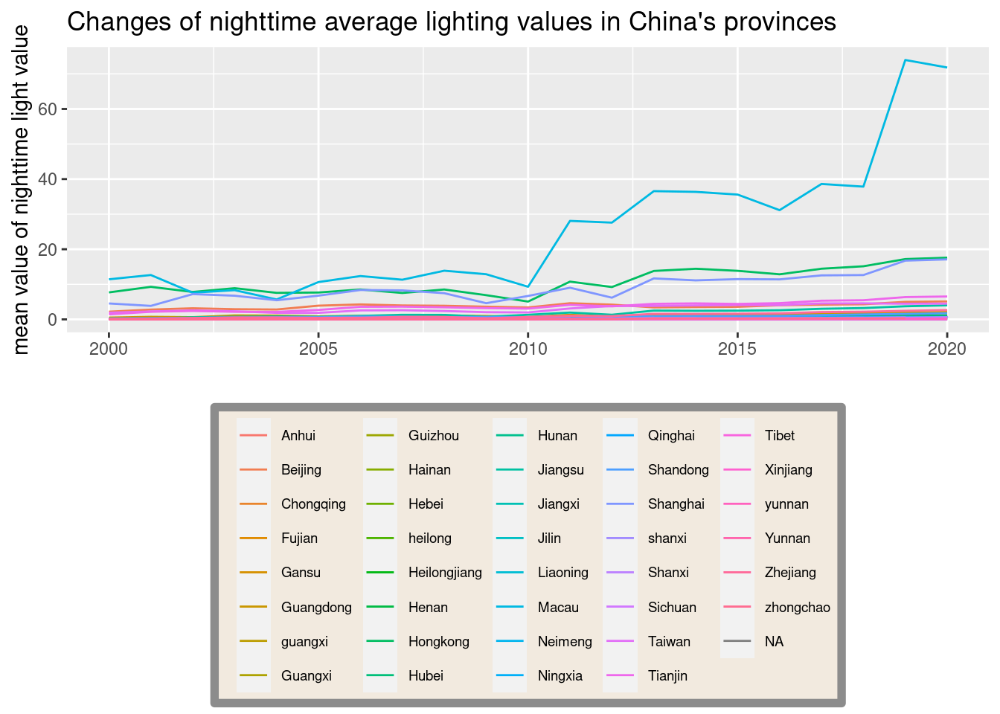
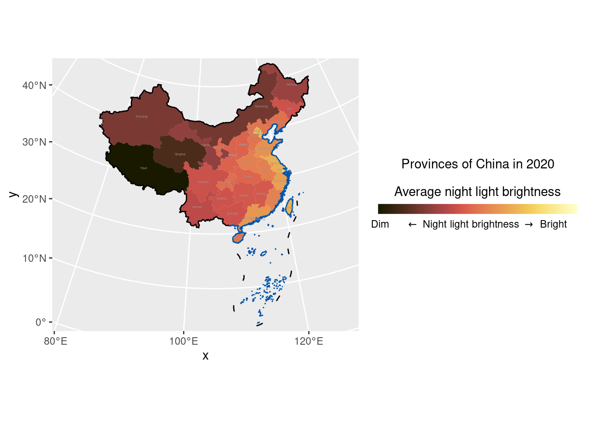

Clearly stated background and questions / hypotheses / problems being addressed. Sets up the analysis in an interesting and compelling way.
Narrative: Clear narrative description of the data sources and methods. Includes data from at least two sources that were integrated / merged in R.
Code: The code associated with the project is well organized and easy to follow. Demonstrates mastery of R graphics and functions.
Data: The underlying data are publicly accessible via the web and downloaded/accessed within the Rmd script. If you want to use your own data, you must make it available on a website (e.g. Figshare) so that others are able to re-run your code.
You can do bullets like this:
You can do numbers like this:
See http://rmarkdown.rstudio.com/ for all the amazing things you can do.
Here’s my first code chunk.
library(latex2exp)
library(scico)
library(dplyr)##
## Attaching package: 'dplyr'## The following objects are masked from 'package:stats':
##
## filter, lag## The following objects are masked from 'package:base':
##
## intersect, setdiff, setequal, unionlibrary(sp)
library(tidyverse)## ── Attaching packages ─────────────────────────────────────── tidyverse 1.3.1 ──## ✔ ggplot2 3.3.5 ✔ purrr 0.3.4
## ✔ tibble 3.1.6 ✔ stringr 1.4.0
## ✔ tidyr 1.1.4 ✔ forcats 0.5.1
## ✔ readr 2.1.0## ── Conflicts ────────────────────────────────────────── tidyverse_conflicts() ──
## ✖ dplyr::filter() masks stats::filter()
## ✖ dplyr::lag() masks stats::lag()library(sf)## Linking to GEOS 3.8.0, GDAL 3.0.4, PROJ 6.3.1Load any required packages in a code chunk (you may need to install some packages):
library(readxl)
provinceNight <- read_excel("provinceNight.xls")ggplot(provinceNight) +
geom_line(aes(year,mean,color = province)) +
theme(legend.position="bottom",
legend.text=element_text(size=7),
legend.title = element_blank(),
legend.background = element_rect(fill = "#f2eadf",
color = "grey55",
size = 2)) +
labs(x = " ",y = "mean value of nighttime light value",title = "Changes of nighttime average lighting values in China's provinces")
ggsave("change of nighttime value.png",
width = 40, height = 20, device = png)read_sf("NineSegment.geojson") -> cn
read_sf('data/AdministrativeDivisions/province.shp') -> provmap
read_sf('data/AdministrativeDivisions/市.shp') -> citymap
read_sf('data/AdministrativeDivisions/县.shp') -> countymap
read_sf("data/Coastline/海岸线.shp") -> hax
provmap## Simple feature collection with 35 features and 4 fields
## Geometry type: MULTIPOLYGON
## Dimension: XY
## Bounding box: xmin: 73.50114 ymin: 6.323421 xmax: 135.0885 ymax: 53.5609
## Geodetic CRS: CGCS_2000
## # A tibble: 35 × 5
## 省代码 省 类型 Field geometry
## <dbl> <chr> <chr> <dbl> <MULTIPOLYGON [°]>
## 1 110000 Beijing 直辖市 0 (((116.6753 41.0401, 116.6762 41.04006, 116…
## 2 120000 Tianjin 直辖市 0 (((117.4438 40.25101, 117.4561 40.24615, 11…
## 3 130000 Hebei 省 0 (((118.8539 39.10692, 118.8493 39.10679, 11…
## 4 140000 Shanxi 省 0 (((114.1371 40.73445, 114.1386 40.73295, 11…
## 5 150000 Neimeng 自治区 0 (((121.4981 53.32607, 121.5012 53.32112, 12…
## 6 150000 zhongchao 不统计 0 (((124.3585 39.94443, 124.3583 39.94437, 12…
## 7 210000 Liaoning 省 0 (((121.0345 38.87063, 121.0353 38.87017, 12…
## 8 220000 Jilin 省 0 (((130.5655 42.45006, 130.565 42.44991, 130…
## 9 230000 Heilongjiang 省 0 (((123.4025 53.53506, 123.4047 53.53504, 12…
## 10 310000 Shanghai 直辖市 0 (((121.4585 31.75982, 121.4593 31.75975, 12…
## # … with 25 more rowsprovinceNight %>%
dplyr::filter(year == 2020) %>%
dplyr::select(-year) %>%
left_join(provmap) %>%
st_sf() -> df3## Joining, by = "省"df3## Simple feature collection with 37 features and 13 fields (with 1 geometry empty)
## Geometry type: MULTIPOLYGON
## Dimension: XY
## Bounding box: xmin: 73.50114 ymin: 6.323421 xmax: 135.0885 ymax: 53.5609
## Geodetic CRS: CGCS_2000
## # A tibble: 37 × 14
## provinceCode 省 mean sum Std minimum maximum `Nonzero pixel …
## <dbl> <chr> <dbl> <dbl> <dbl> <dbl> <dbl> <dbl>
## 1 340000 Anhui 1.11 7.12e5 4.46 0 112. 120152
## 2 820000 Macau 71.8 4.60e3 54.6 13.4 288. 64
## 3 110000 Beijing 5.12 4.36e5 11.0 0 313. 39447
## 4 500000 Chongqing 0.707 2.68e5 3.61 0 169. 40379
## 5 350000 Fujian 1.13 6.08e5 4.46 0 153. 94516
## 6 620000 Gansu 0.0998 2.16e5 1.40 0 306. 43199
## 7 440000 Guangdong 2.10 1.59e6 6.11 0 276. 219480
## 8 450000 Guangxi 0.332 3.43e5 2.25 0 90.1 69347
## 9 520000 Guizhou 0.337 2.67e5 2.18 0 99.5 55731
## 10 460000 Hainan 0.811 1.15e5 3.72 0 150. 22558
## # … with 27 more rows, and 6 more variables:
## # Number of non missing pixels <dbl>, province <chr>, 省代码 <dbl>,
## # 类型 <chr>, Field <dbl>, geometry <MULTIPOLYGON [°]>df3 %>%
ggplot() +
geom_sf(aes(fill = mean), size = 0.01,
color = "white") +
geom_sf(data = cn, size = 0.5,
color = "black", fill = NA) +
geom_sf(data = hax, color = "#0055AA") +
stat_sf_coordinates(geom = "text", color = "gray60",
aes(label = province),
size = 0.9) +
coord_sf(crs = "+proj=lcc +lat_1=30 +lat_2=62 +lat_0=0 +lon_0=105 +x_0=0 +y_0=0 +ellps=krass +units=m +no_defs",
xlim = c(-3500000, 3090000)) +
scico::scale_fill_scico(
palette = "lajolla",
direction = -1,
trans = "log10",
breaks = c(0.01, 0.6, 25),
labels = c("Dim", latex2exp::TeX("$\\leftarrow$ Night light brightness $\\rightarrow$"), "Bright"),
name = "Provinces of China in 2020\n
Average night light brightness",
guide = guide_colorbar(
direction = "horizontal",
barheight = unit(3, units = "mm"),
barwidth = unit(60, units = "mm"),
draw.ulim = FALSE,
ticks.colour = "transparent",
title.position = 'top',
title.hjust = 0.5,
label.hjust = 0.5
)
) +
scale_x_continuous(expand = c(0.02, 0.02)) +
scale_y_continuous(expand = c(0.02, 0.02))## Warning: Removed 2 rows containing missing values (geom_text).
Add any additional processing steps here.
[~200 words]
Tables and figures (maps and other graphics) are carefully planned to convey the results of your analysis. Intense exploration and evidence of many trials and failures. The author looked at the data in many different ways before coming to the final presentation of the data.
Show tables, plots, etc. and describe them.
[~200 words]
Clear summary adequately describing the results and putting them in context. Discussion of further questions and ways to continue investigation.
All sources are cited in a consistent manner